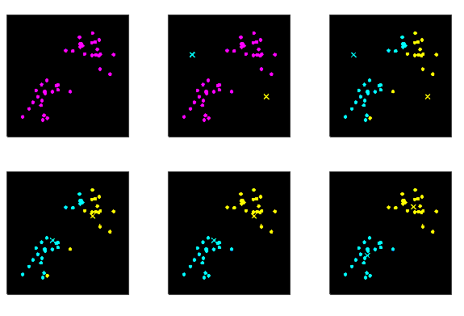

Sklearn-Clustering
将数据分组成簇，使得簇内相似度尽可能高，簇间相似度尽可能低的无监督学习方法。
- Partition-based methods
- Density-based methods
- DBSCAN
- OPTICS（Ordering points to identify the clustering structure）
- Hierarchical methods
- BIRCH（Balanced Iterative Reducing and Clustering Using Hierarchies）
- Chameleon
- Agglomerative
- Grid-based methods
- STING（STatistical INformation Grid）
- WAVE-CLUSTER
- CLIQUE（CLustering In QUEst）
- Model-based methods
- GMM（Gaussian Mixture Models）
- SOM（Self Organized Maps）
- Fuzzy-based methods
- Other methods
- SLC（Sequential Leader Clustering）
- Spectral
优点
缺点
- 要求用户必须事先给出要生成的簇的数k
- 对噪音和异常点比较的敏感
- 非凸的数据集比较难收敛
- 最终可能只是局部最优解
对于给定的样本集，按照样本之间的距离大小，将样本集划分为k个簇。让簇内的点尽量紧密的连在一起（E尽可能小），而让簇间的距离尽量的大。
E=i=1∑kx∈Ci∑∥x−μi∥22
- k：样本被划分为k个簇
- Ci：簇划分为{C1,C2,…,Ck}
- μi：簇Ci的均值向量，μi=∣Ci∣1x∈Ci∑x
- 输入：k、D={x1,x2,…,xm}
- i=1,2,…,m
- j=1,2,…,k
- Step1：从数据集D中随机选择k个样本作为初始的质心向量{μ1,μ2,…,μk}
- Step2：把每个样本分配到距离它最近的质心形成的簇
- Cj=∅
- dij=∥xi−μj∥2
- 选出距离最近的Cλi作为xi的簇，λi=(j=1,2,…,kmindij).j
- 将xi加入到簇，Cλi=Cλi⋃xi
- Step3：重新计算均值向量
- μj′=∣Cj∣1x∈Cj∑x
- μj=μj′
- 重复Step2、Step3直到满足要求
- 输出：C={C1,C2,…,Ck}
迭代过程
